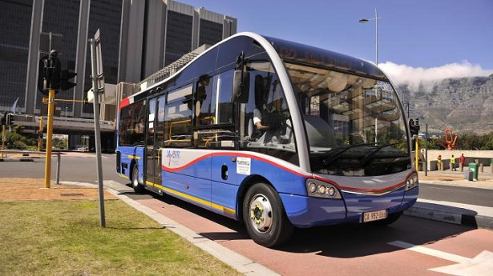
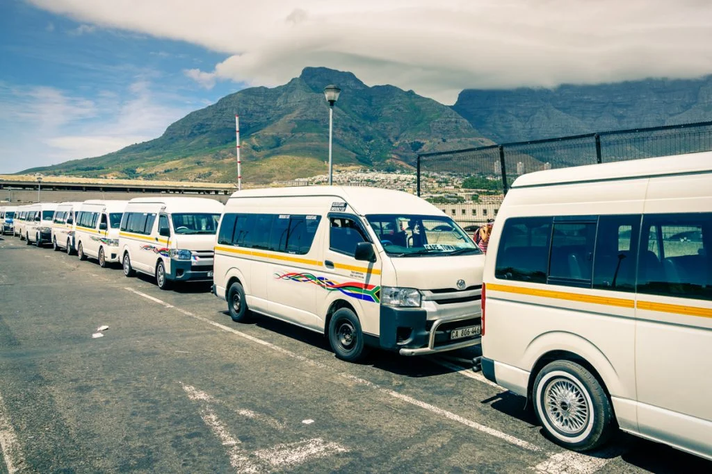

A geoportal to provide information on taxi routes, train routes and live tracking of the MyCiTi buses.
The MyCiTi bus service is the City of Cape Town's reliable, safe and integrated rapid transit system. Designed to connect communities across the metropolitan area, the network features dedicated bus lanes, feeder routes, and universally accessible stations. Explore our interactive schedules to plan your journey across the city.
View Timetable
Minibus taxis are a vital component of Cape Town’s public transport, providing essential mobility to commuters throughout the city and surrounding townships. This Geoportal shows key taxi routes to help improve transparency and planning across the metropolitan transport network.

This Geoportal was developed as part of a UCT course, APG3039B. Its purpose is to share the location and updates of public transport. The data may not be accurate, because some of it may have been simulated.